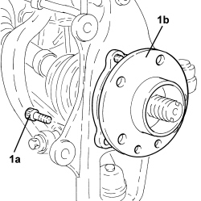
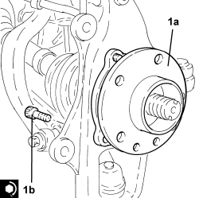
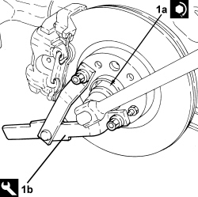

4450C28 FRONT WHEEL HUB,LEFT OR RIGHT - R.R WITH WHEEL REMOVED, CHECK WHEEL GEOMETRY SEPARATELY
- Path
- Procedures > 44 SUSPENSION AND WHEELS > 4450 HUBS AND WHEELS > 4450C FRONT WHEEL HUBS > 4450C28 FRONT WHEEL HUB,LEFT OR RIGHT - R.R WITH WHEEL REMOVED, CHECK WHEEL GEOMETRY SEPARATELY
- Kind
- repair procedure (removal / refitting; the operation number is the code)
- Applies to
- all engines; all production periods
- Interactive page
- https://sloeber94.github.io/elrnDB/#/939010863
Applies to: all engines; all production periods
 Removing
Removing
 Refitting
Refitting- Position the vehicle on a lift.
Op. 4450B02 LEFT FRONT WHEEL - R.R
1. Remove the two stakings and undo the nut (1a) securing the right front hub to the driveshaft using the tool (1b) for counter-torque.

Applies to: all engines; all production periods
Op. 3310A57 FRONT BRAKE CALIPER BRACKET (ONE), LEFT OR RIGHT - R.R
Op. 3310A48 FRONT BRAKE DISC (ONE), LEFT OR RIGHT - R.R
Op. 3310A59 FRONT BRAKE DISC GUARD (ONE), LEFT OR RIGHT- R.R
1. Unscrew bolts (1a) and remove the front wheel hub (1b) from the strut.

Applies to: all engines; all production periods
Refitting
Removing1. Place the front wheel hub (1a) in its housing and secure it tightening the bolts (1b) to the recommended torque.

Applies to: all engines; all production periods
Op. 3310A59 FRONT BRAKE DISC GUARD (ONE), LEFT OR RIGHT- R.R
Op. 3310A48 FRONT BRAKE DISC (ONE), LEFT OR RIGHT - R.R
Op. 3310A57 FRONT BRAKE CALIPER BRACKET (ONE), LEFT OR RIGHT - R.R
1. Tighten the new nut (1a) securing the front driveshaft to the wheel hub using the tool (1b) for counter-torque following the instructions given below.
- Tighten the nut to a torque of 14.3 - 15.8 daNm.
- Undo the nut by 90° ± 2°.
- Pretighten the nut to a torque of 6.7 - 7.4 daNm.
- Tighten the nut through an angle of 45° ± 2°.
- Tighten the nut to a torque of 20.0 - 38.0 daNm.

Applies to: all engines; all production periods
- Stake the nut collar twice.
Op. 4450B02 LEFT FRONT WHEEL - R.R
- Remove the vehicle from the lift.
Topics linked from this page (4)
- 3310A48 FRONT BRAKE DISC (ONE), LEFT OR RIGHT - R.R
- 3310A57 FRONT BRAKE CALIPER BRACKET (ONE), LEFT OR RIGHT - R.R
- 3310A59 FRONT BRAKE DISC GUARD (ONE), LEFT OR RIGHT- R.R
- 4450B02 LEFT FRONT WHEEL - R.R